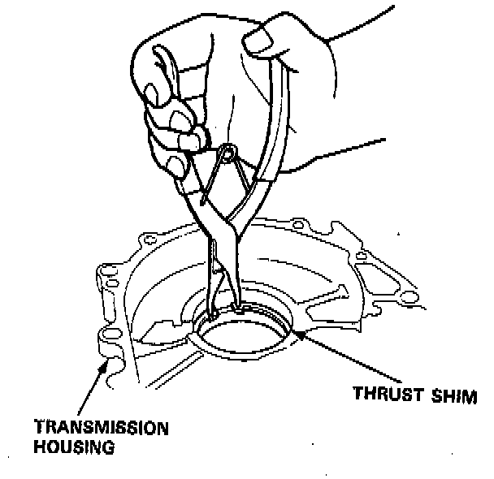
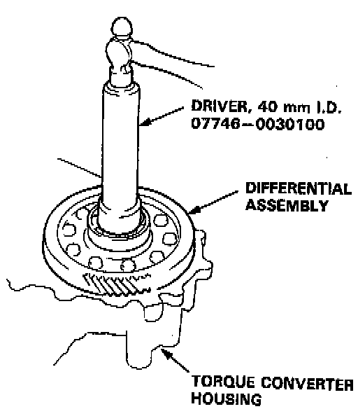
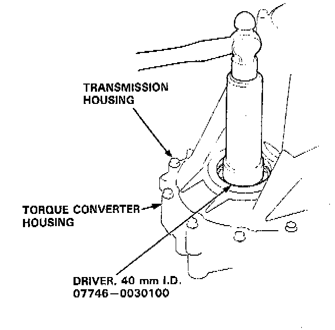
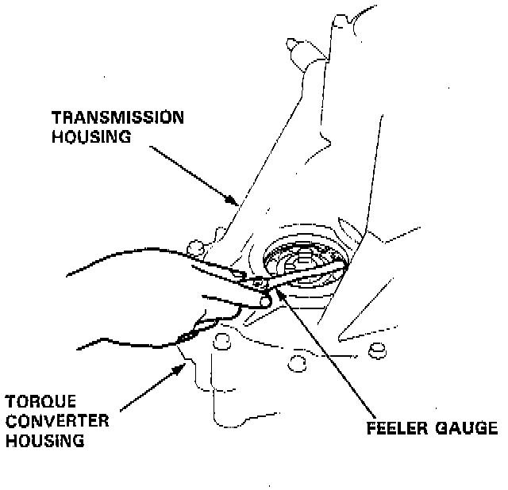
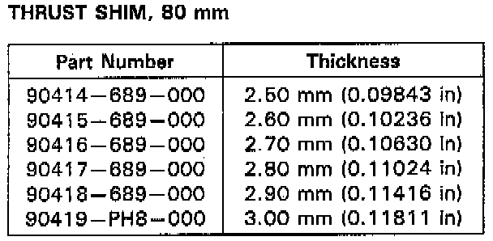
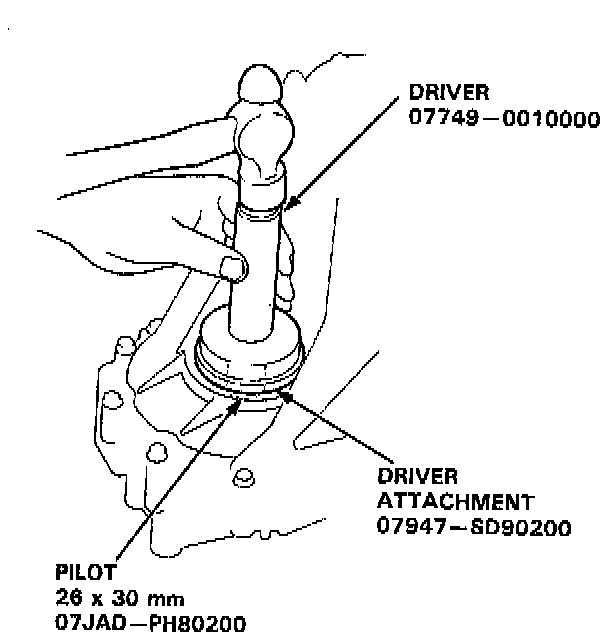
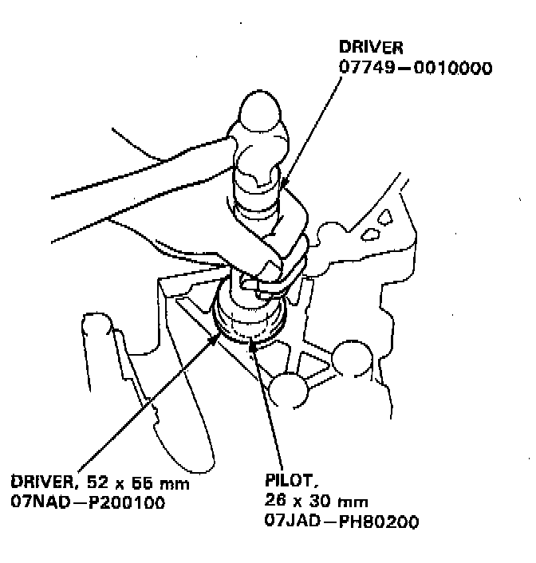

Installation/Side Clearance
TOOLS REQUIRED- 07746-0030100 Driver, 40 mm I.D.
- 07947-SD90200 Driver Attachment
- 07JAD-PH80200 Pilot 26 x 30 mm
- 07NAD-P200100 Driver, 52 x 55 mm
- 07JAD-PH80200 Pilot, 26 x 30 mm
- Or Equivalent

1. Install a 2.50 mm (0.098 inch) thrust shim in the transmission housing.
NOTE: Do not install the oil seal yet.

2. Install the differential assembly into the torque converter housing using the special tool as shown.
3. Assemble the transmission. Install the transmission housing and tighten the bolts.

4. Tap on the transmission housing side of the differential assembly with the special tool to seat the differential assembly in the torque converter housing.

5. Measure the clearance between the thrust shim and outer race of the ball bearing in the transmission housing.
- STANDARD: 0 - 0.15 mm (0 - 0.006 inch).

6. If out of limits, select a new thrust shim from the following table:
NOTE: If the thrust shim-to-ball bearing outer race clearance measured in step 5 is within the standard, it is not necessary to perform steps 7 and 8.
7. Remove the transmission housing.
8. Replace the 2.50 mm (0.098 inch) thrust shim with the one of the correct thickness selected in step 6.
9. Install the transmission housing.

10. Install the oil seal flush with the transmission housing using the special tools as shown.

11. Install the oil seal flush with the torque converter housing using the special tools as shown.